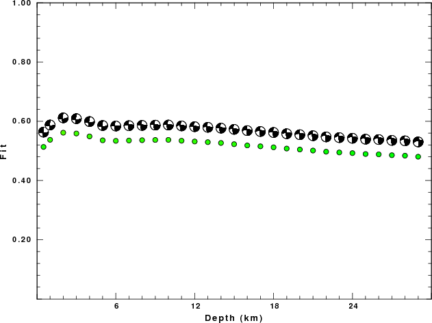
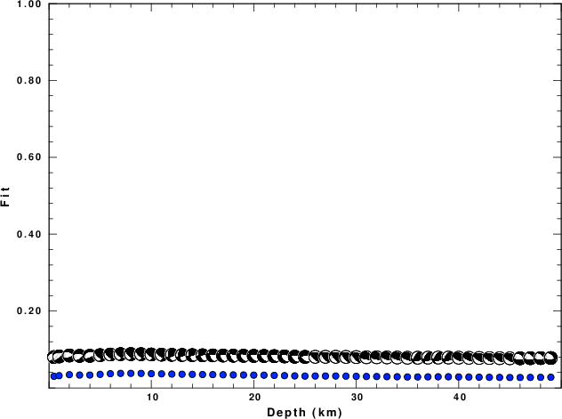
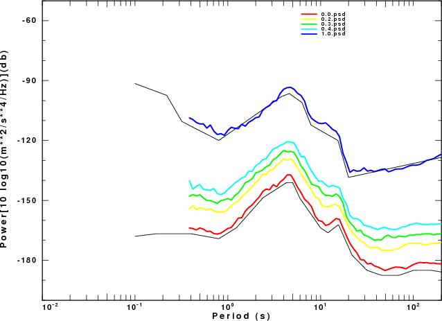
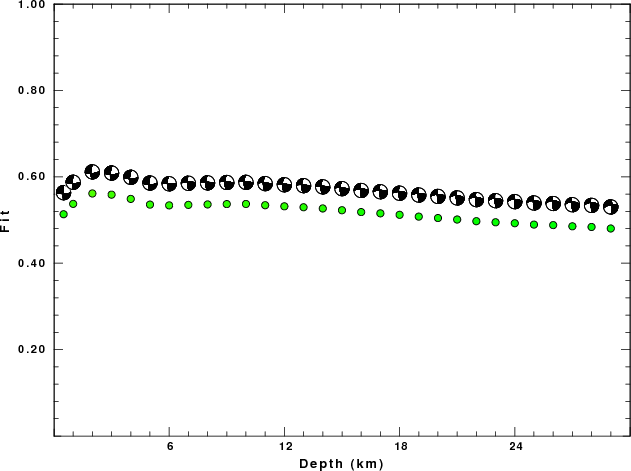
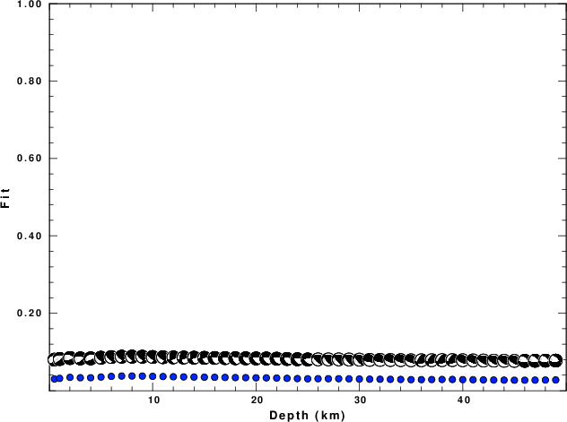
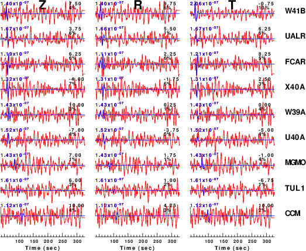
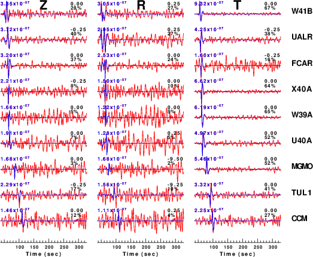
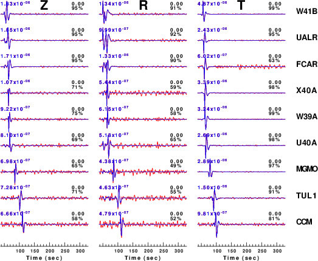

 Fig 2a

Fig 2b

Fig 2c

Fig 2d
The determination of earthquake source parameters through moment tensor inversion is a non-linear problem that is affected by many factors which may not be well understood. In the opinion of this author, the association of error to the source parameters may be impossible.
The factors affecting the inversion result are many and include
the following:
The objective of the codes for determining source parameters is to model the observed waveforms through a theoretical wave propagation model. The simplest assumption is to assume a single, simple wave propagation model to all observation points. This assumption is never correct, but will be adequate if the focus is on modeling the lower frequency content in the observed waveforms. As one uses higher frequencies, the inability to model 3-D wave propagation, because of the synthetic seismogram codes used and the assumptions about the Earth model, affect the inversion.
Even if the path is relatively simple, a site response may affect the levels of recorded motion.
Recorded data are noisy because of inherent instrumental noise and installation of the instrument. Such noise can be documented and perhaps mitigated through the selection of the instrumentation and care in installation.
This noise arises through human activity and natural processes related often to atmospheric effects. These noise levels dynamically change on time scales varying from hours, for human activity, to months, for seasonal changes.
The actual observations depend on the source depth and source process. One can easily think of distributions of stations whose observations in the presence of noise provide no information for a particular source mechanism.
The purpose of this tutorial is to examine the effect of noise
on source inversion results and to determine if goodness of
fit parameters can be modeled in a synthetic study. This tutorial
will consider a small earthquake in Arkansas, Earthquake of May 22,
2013.
Another aspect of this example is that the ability of determining
source parameters as a function of source size may be useful in
defining the capabilities of a seismic network.
The new tool developed for this study is the program sacnoise.
Using the USGS Albuquerque Seismological Lab New Low Noise Model (NLNM)
and New High Noise Model (NHNM), an acceleration
history in units of meters/s/s (M/S**2) is created as a sac
file. The source code and Makefile are given in this
distribution in MT_SENSITIVITY/src. The current command
syntax is obtained by running the program using the -h flag:
rbh> sacnoise -h
Usage: sacnoise -pval pval -seed seed -dt dt -npts npts
Create time series of noise based on ASL NLNM and NHNM models. The output has units of
m/s**2 (default)
The noise level can be adjusted between the low and high noise models with pval
pval=1 High noise model
pval=0.5 mid-noise model
pval=0 Low noise model
-dt dt (default 1.0) sample interval
-npts npts (default 32768) length of time series
-pval pval (default 0.5)
-seed seed (default 12345) Integer random number seed
-h (default false) online help
To illustrate the usage and the use of the pval
parameter, the script DOIT in MT_SENSITIVITY/NOISEPLOTS/
does the following:
The plot so created is
|  |
| Fig. 1. Comparison of acceleration PSD from sacnoise
simulations to the ASL NLNM (lower black curve) and NHNM
(upper black curve). |
The scripts are provided investigate the earthquake of 2013/05/22
17:19:39. The driver script DOIT2 performs 6 simulations as
follow:
Model Strike Dip Rake Depth Mw Noise-(pval) Inversion CUS 85 70 -20 2.0 3.38 0.3 CUS.85.70.-20.0020.3.38.0.3/ CUS 85 70 -20 2.0 3.00 0.3 CUS.85.70.-20.0020.3.00.0.3/ CUS 85 70 -20 2.0 4.00 0.3 CUS.85.70.-20.0020.4.00.0.3/ CUS 85 70 -20 2.0 3.00 0.4 CUS.85.70.-20.0020.3.00.0.4/ CUS 85 70 -20 2.0 3.59 0.4 CUS.85.70.-20.0020.3.50.0.4/ CUS 85 70 -20 2.0 4.00 0.4 CUS.85.70.-20.0020.4.00.0.4/ Real 85 70 -20 2.0 3.38 20130522171939 [This is not part of the simulation but for reference]
The first simulation uses the Mw determined for the
earthquake. The next two vary the Mw. The reason is that we
might expect better results for a larger Mw which will provide
greater signal-to-noise than for the smaller event. The last
three simulations increase the noise level in another examination
of the lower limit of applicability of the source inversion.
The selected solution for each simulation is given in the files
with names such as
CUS.85.70.-20.0020.3,38.0.3/HTML.REG/fmdfit.dat.
The goodness of fit parameters for the actual data set and for
the six simulations are as follow.
Directory H STK DIP RAKE Mw FIT 20130522171939 2.0 85 70 -20 3.38 0.5615 CUS.85.70.-20.0020.3.38.0.3 2.0 85 70 -20 3.39 0.3885 CUS.85.70.-20.0020.3.00.0.3 2.0 275 80 40 3.09 0.0639 CUS.85.70.-20.0020.4.00.0.3 2.0 85 70 -20 4.00 0.9777 CUS.85.70.-20.0020.3.00.0.4 8.0 130 60 45 3.19 0.0379 CUS.85.70.-20.0020.3.50.0.4 2.0 85 70 -25 3.52 0.3465 CUS.85.70.-20.0020.4.00.0.4 2.0 85 70 -20 4.00 0.9430
We see that the goodness of fit in the simulations depends on the
event magnitude, with larger magnitudes giving a better fit,
because the increased signal-to-noise ratio. As noise is
increased, the fit degrades. Some figures from the detailed
presentation of the processing results may help put the results in
perspective. We will first compare the goodness of fit plots for
the real data set and the first three simulations.
|
 Fig 2a |
Fig 2b |
|
 Fig 2c |
Fig 2d |
This figure presents the goodness of fit (1.0 is the best
fit) as a function of source depth and displays the focal
mechanism for the best fit at each depth. First note that
the data set for the actual event did not have a well defined best
fit. The selected source depth of 2 km is very subtle. The
fundamental question is whether the source depth and
fault parameters are actually known. The simulation also
uses more vertical and radial traces than the real data set.
Interestingly Fig 2b, which is based on synthetics shows a very
similar pattern of best fit as a function of depth. In this
case the solution is known, which provides the basis for
determining if the solution is correct. If the event had
been smaller, e.g., Mw=3.0, Fig 2c shows that the fit degrades
because of the lower signal-to-noise ratio. The simulation does
provide a good estimate of the Mw. Finally, if the event had
been larger, Fig 2d, there would have been better control on the
depth.
In comparing Fig2b to Fig2d, it seems as if the pattern would be
similar if the fit is plotted logarithmically. This is based on
the ratio of the best fit value at the 2 km depth to the
lower value at a 50 km depth.
To see the effect of noise consider the waveforms for the
pval=0.4 simulations:
| CUS.85.70.-20.0020.3.00.0.4 |
CUS.85.70.-20.0020.3.50.0.4 |
CUS.85.70.-20.0020.4.00.0.4 |
|  |
 |
 |
| Fig. 3a |
Fig. 3b |
Fig. 3c |
Figure 3 compares the waveforms to be modeled (red) to the
predicted best fit (blue). The time shift for best fit and
reduction in variance are indicated to the right of each trace and
the peak filtered velocity (0.02 - 0.10 Hz) is indicated at the
left. The actual source inversion used at window width of
only 75 seconds whereas the simulation used a window of 270
seconds as a test of the superposition of noise and the clean
synthetic.
In comparing the the fits to the observed data to those of the
Mw=3.38 pval=0.3 simulations. a similar pattern is seen. For
the actual data, many traces were judged too noisy for the source
inversion. These were typically the Z and R traces at the larger
distances. The simulations indicate that the analyst required a
S/N of at least 2 or greater before judging a trace useful.
Perhaps it may be possible to change the grid search used by wvfgrd96
from a single pass to a two-pass process. The second pass
would examine the fit to each trace and then automatically
down-weight or reject a trace if the fit is less than 20%, or
so. The effect of the time window on the fit parameter would
have to be investigated.
The following scripts are provided in this distribution. The annotated scripts are given in the following links:
The processing scripts for this tutorial are in Dist.tgz. Click and save on the link
to save this file on your machine. Then unpack using the command
gunzip -c Dist.tgz | tar xvf
The result of unpacking will be
MT_SENSITIVITY/
|---0XXXREG/
|---20130522171939/
|---CUS.85.70.-20.0020.3.00.0.3/
|---CUS.85.70.-20.0020.3.00.0.4/
|---CUS.85.70.-20.0020.3.38.0.3/
|---CUS.85.70.-20.0020.3.50.0.4/
|---CUS.85.70.-20.0020.4.00.0.3/
|---CUS.85.70.-20.0020.4.00.0.4/
|---DOIT2
|---DOLL
|---DOMKMOD2
|---DOPACK
|---NOISEPLOTS/
|---doit2.html
|---doll.html
|---domkmod2.html
|---index.html
|---src/
After unpacking,
cd MT_SENSITIVITY/src
make
This will compile the program sacnoise. You can then cd
.. and run the DOIT2 script